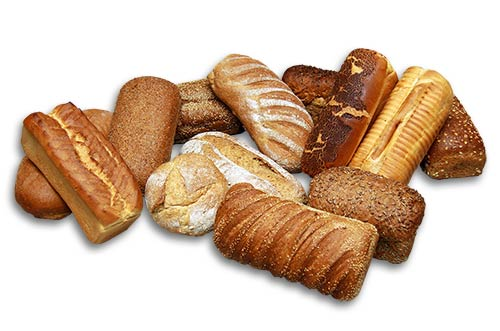
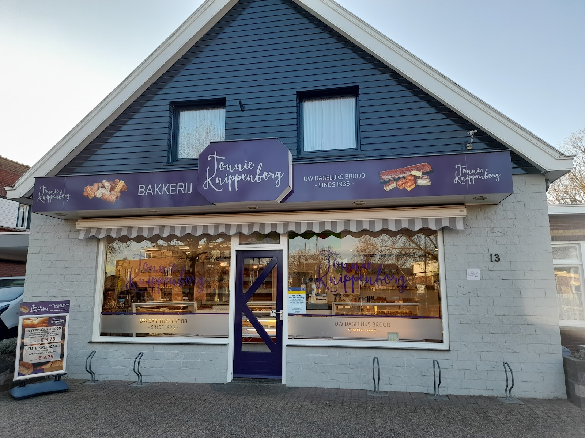
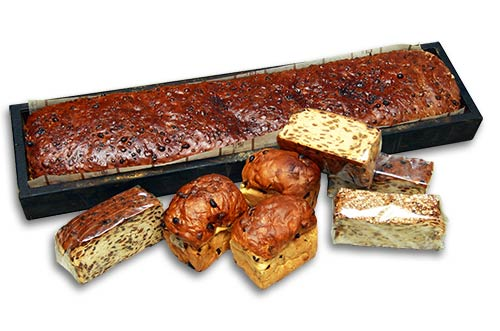
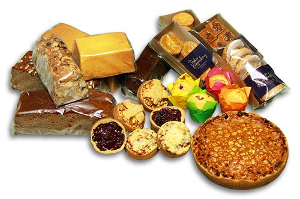
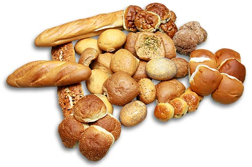
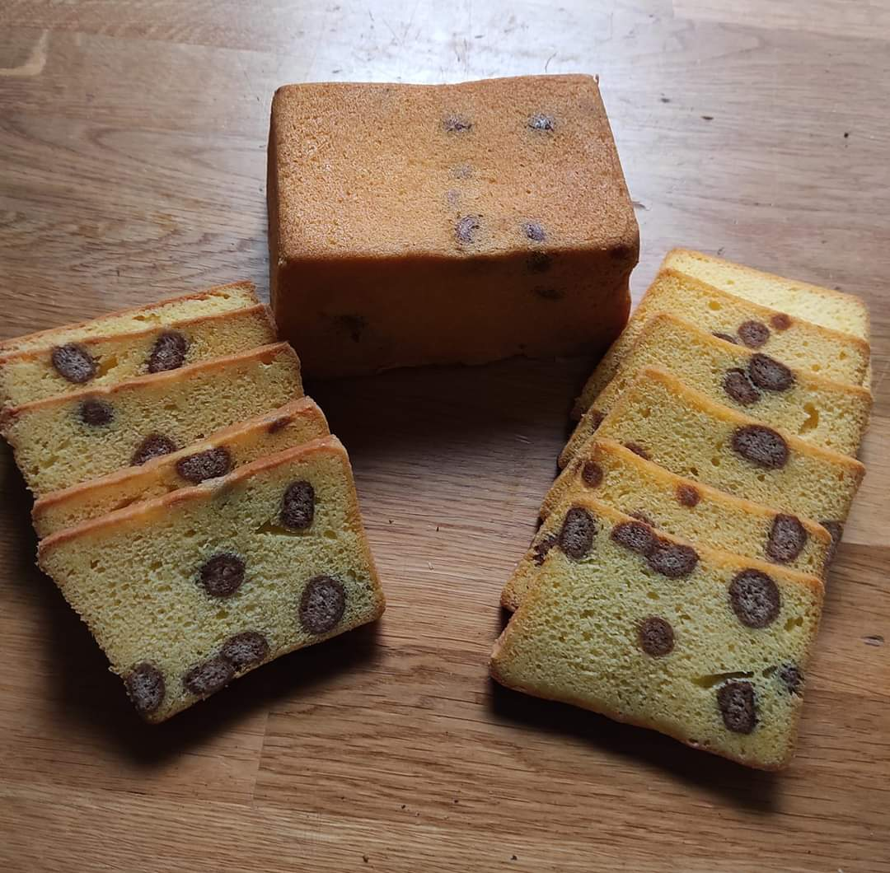

Brood
Elke dag vers gebakken. De vertrouwde soorten wit, tarwe en volkoren, en daarnaast specialiteiten zoals koolhydraatarmer brood, chia-boekweitbrood, speltbrood en Ruwe Bolster.
Bakker in Aalten, op Plein-Zuid 13
Brood, krentenwegge, gebak en broodjes uit onze eigen bakkerij. Al drie generaties gebakken met goede, natuurlijke grondstoffen.
4,7 uit 61 Google-reviews

Op zaterdag zijn we er al om acht uur. Op maandag sluiten we om één uur en op zondag zijn we dicht.
Plein-Zuid 13| Maandag | 08.30 tot 13.00 |
|---|---|
| Dinsdag | 08.30 tot 18.00 |
| Woensdag | 08.30 tot 18.00 |
| Donderdag | 08.30 tot 18.00 |
| Vrijdag | 08.30 tot 18.00 |
| Zaterdag | 08.00 tot 16.00 |
| Zondag | Gesloten |
Alles komt uit onze eigen bakkerij en gaat van daar naar de winkel in Aalten. Een greep uit wat u bij ons vindt:

Elke dag vers gebakken. De vertrouwde soorten wit, tarwe en volkoren, en daarnaast specialiteiten zoals koolhydraatarmer brood, chia-boekweitbrood, speltbrood en Ruwe Bolster.

Van klein tot groot. En natuurlijk de Achterhoekse krentenwegge, ons echte streekproduct, die we ook als rozijnenwegge en muesliwegge bakken.

Ook zelf gemaakt: appeltaart, cocosmacronen, waldrastukjes, ontbijtkoek en kandijkoek, kruidcake, appelrondjes, kersenrondjes, muffins en nog veel meer.

Dagelijks in onze eigen bakkerij gebakken: bolletjes, krentenbollen, ham-kaascroissants, mini-kwarkbolletjes en nog veel meer soorten kleinbrood.

Sinds 1936 en al drie generaties lang bakken we met toewijding uw dagelijks brood. We blijven werken aan onze producten en kiezen daarbij voor goede, natuurlijke grondstoffen.
Alles wordt gebakken in onze eigen bakkerij aan de Newtonstraat in Lichtenvoorde, met hoogwaardige grondstoffen en de modernste apparatuur. Van daaruit gaan brood en banket naar onze winkels, ook naar die op Plein-Zuid.
Ambachtelijke kwaliteit staat bij ons hoog in het vaandel. Dat danken we ook aan onze vakkundige medewerkers.
Benieuwd naar de weekaanbiedingen?
U vindt ze op onze Facebookpagina en in uw plaatselijke weekkrant.
4,7 uit 61 reviews op Google
"Zeer klantvriendelijk en zeer aardig. Ook is het brood voortrevelijk. Ook is de facebook pagina zeer goed onderhouden. Al met al ben ik erg tevreden over deze bakker. (De speculaas cake is een aanrader.)"
"Het is een leuke kleine bakkerij, met altijd lekker vers brood, en gebak. En ook belangrijk vriendelijke mensen."
"Prima bakker, lekker brood en broodjes. En ook de appelflappen zijn niet te versmaden😀"
"Aan de aantal sterren te zien is een uitgestrekt verslag niet nodig"
Niet in Aalten? Hetzelfde brood haalt u ook in een van onze andere winkels.
Dinxperlo
Hogestraat 50
0315 652 334Eibergen
J.W. Hagemanstraat 18
0545 224 988Gaanderen
Hoofdstraat 1-001
0315 340 782Lichtenvoorde
De Leest 60
0544 377 382Ulft
Middelgraaf 2
0315 681 435Varsseveld
Borchgraven 8
0315 241 448Winterswijk
Vredenseweg 82-1
0543 760 015